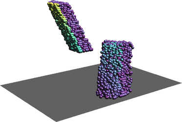
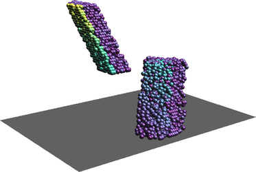
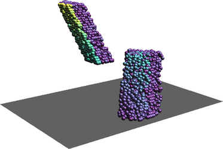

Figure: One scatter plot in with one variable as Z coordinate and another variable as color (two rotated views).
With the default settings, the r3.scatterplot output allows measuring and querying of the values in the scatter plot. Settings such as xscale or position option change the coordinates and make some of the measurements wrong.
A 3D scatter plot can be generated when the z_raster option is provided. A third variable is added to each scatter plot and each point has Z coordinate which represents this third variable.
Each point can also have a color based on an additional variable based on the values from color_raster. Values from a raster are stored as categories, i.e. floating point values are truncated to integers, and a color table based on the input raster color table is assigned to the vector map.
The z_raster and color_raster can be the same. This can help with understanding the 3D scatter plot and makes the third variable visible in 2D as well. When z_raster and color_raster are the same, total of four variables are associated with one point.
Figure: One scatter plot of two variables (left), the same scatter plot but with color showing third variable (middle), again the same scatter plot in 3D where Z represents a third variable (right).

Figure: One scatter plot in with one variable as Z coordinate and another variable as color (two rotated views).
Figure: Three overlapping scatter plots of three variables A, B, and C. Individual scatter plots are distinguished by color. The colors can be obtained using d.vect layer=-1 -c.
If visualization is more important than preserving the actual values, the -s flag can be used. This will place the scatter plots next to each other separated by values provided using spacing option.
The layout options can be still combined with additional variables represented as Z coordinate or color. In that case, Z coordinate or color is same for all the scatter plots.
Figure: Three scatter plots of three variables A, B, and C. First one is A and B, second A and C, and third B and C.

Figure: Three scatter plots of three variables A, B, and C with color showing a fourth variable D in all scatter plots.
The resulting vector will have as many points as there is 3D raster cells in the current computational region. It might be appropriate to use coarser resolution for the scatter plot than for the other computations. However, note that the some values will be skipped which may lead, e.g. to missing some outliers.
The color_raster input is expected to be categorical raster or have values which won't loose anything when converted from floating point to integer. This is because vector categories are used to store the color_raster values and carry association with the color.
The visualization of the output vector map has potentially the same issue as visualization of any vector with many points. The points cover each other and above certain density of points, it is not possible to compare relative density in the scatter plot. Furthermore, if colors are associated with the points, the colors of points rendered last are those which are visible, not actually showing the prevailing color (value). The modules v.mkgrid and v.vect.stats can be used to overcome this issue.
g.region s=0 n=100 w=0 e=100 b=0 t=50 res=10 res3=10 tbres=1 -p3
r3.mapcalc "A = if(depth() < ndepths()/ 2, row()+col()+depth(), col())" -s r3.mapcalc "B = if(row() < nrows()/2, rand(0, nrows()) + col() + depth(), depth() + rand(0, nrows()))" -s r3.mapcalc "C = if(col() < ncols()/3, row() + depth(), rand(0, ncols()))" -s r3.mapcalc "D = depth()"
r3.scatterplot input=A,B output=scatterplot z_raster=C color_raster=D

Figure: 2D scatter plot showing third variable as color and 3D scatter plot showing third variable as color and fourth variable on Z axis which uncovers another group of values not visible from the 2D scatter plot